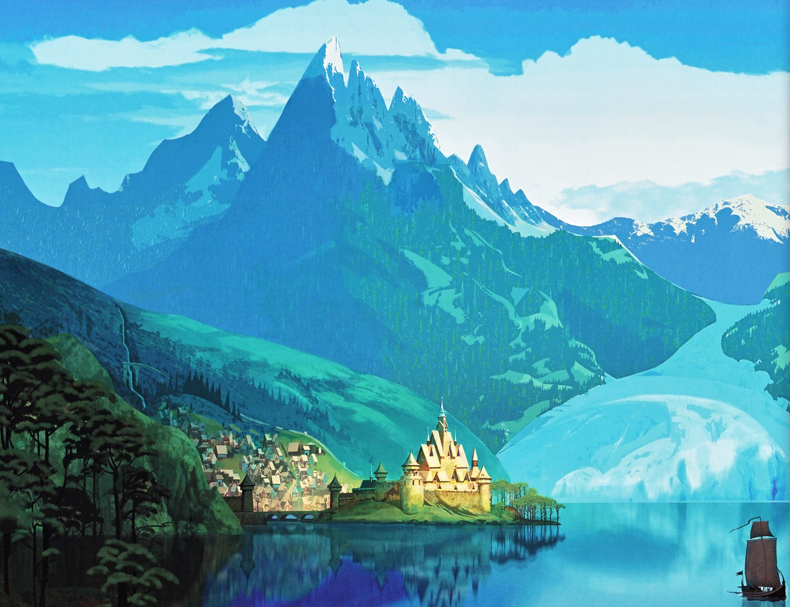
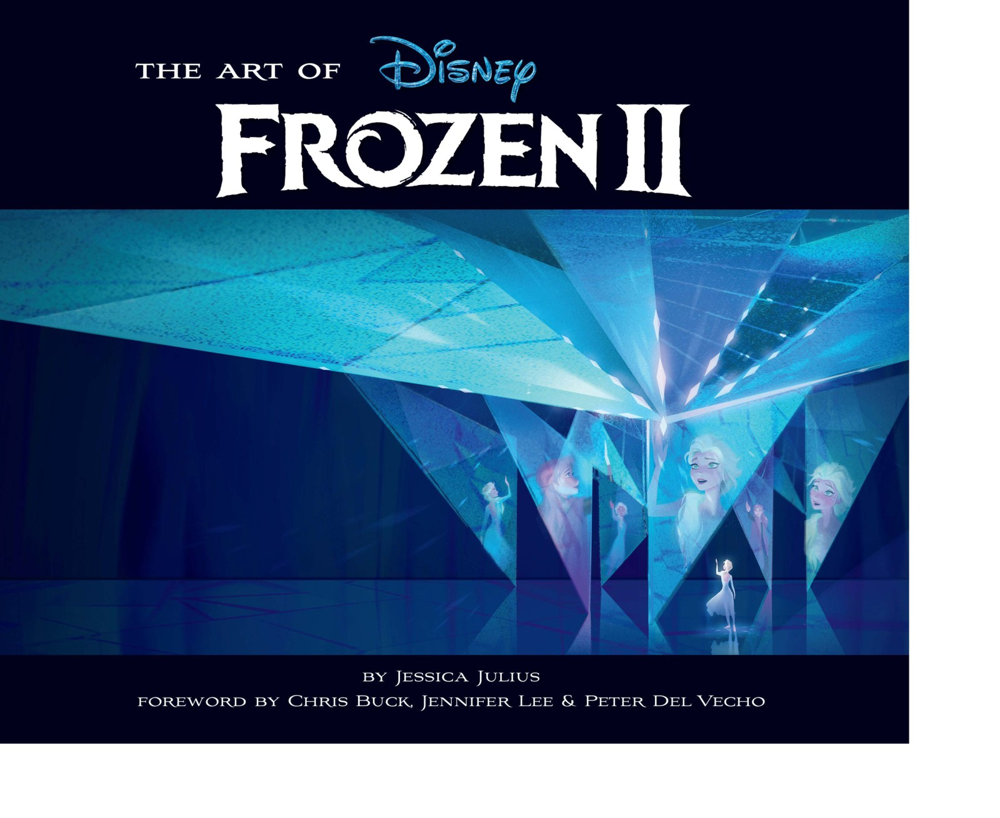
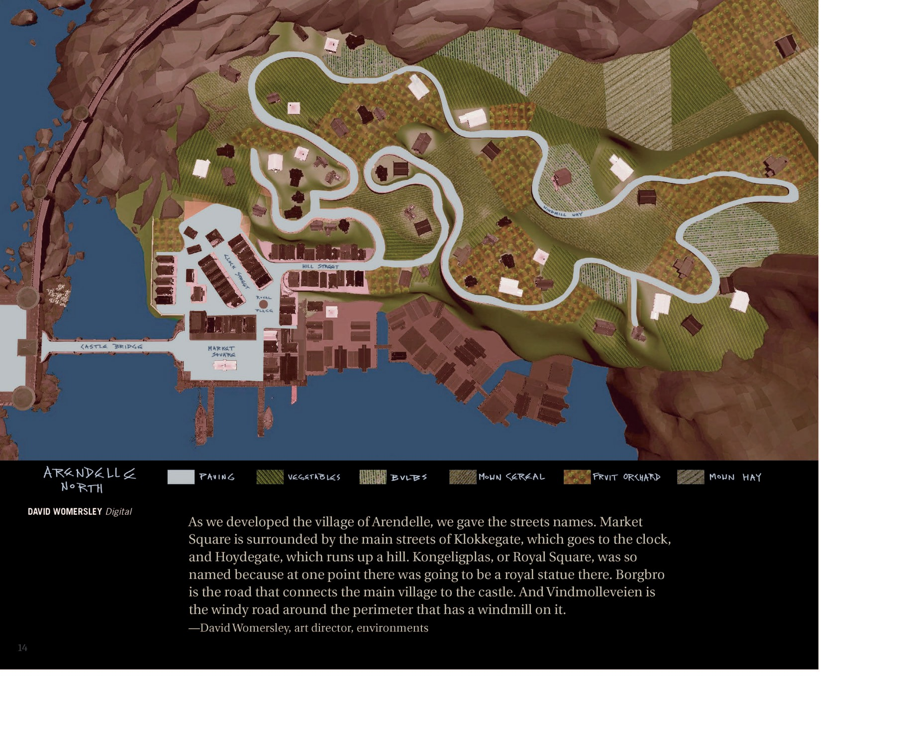

阿伦黛尔王国 Arendelle
阿伦黛尔王国 Arendelle

阿伦黛尔全景：雪峰之后的峡湾王国（来源：《The Art of Disney Frozen》[p.027]）


📄 地理位置与概况
阿伦黛尔是《冰雪奇缘》系列的核心地点，一座以斯堪的纳维亚（最终聚焦挪威）为蓝本的峡湾王国（fjord kingdom），坐落于极北群山与峡湾之间，是安娜与艾莎的故乡 （来源：Disney Wiki；Frozen Wiki）。其名取自挪威小镇 Arendal（虽然后者并不临峡湾），亦与华特·迪士尼曾祖父之名 Arundel 相近 （来源：Frozen Wiki）。王国依偎于名为 Arenfjord 的峡湾旁，因此得名；周边被包括北山（North Mountain）在内的庞大山脉环抱，既能观测北极光，也随四季更替呈现暖夏与寒冬 （来源：Frozen Wiki；Disney Wiki）。
其视觉原型主要为挪威的 Balestrand 与 Bergen 两座村落，峡湾外形则参考了挪威 Aurland 附近的 Nærøyfjord（纳柔峡湾） （来源：Frozen Wiki；The Art of Frozen [p.40]）。建筑装饰广泛采用挪威民间彩绘艺术 rosemaling（玫瑰彩绘）——以程式化的花朵纹样为特征，这一母题也延伸到角色加冕礼服乃至艾莎的魔法中 （来源：Frozen Wiki；The Art of Frozen [p.49]）。
📄 建筑与艺术风格
阿伦黛尔是雪峰之后、欧式建筑加金顶城堡、红帆维京船、澄蓝天空的峡湾王国 （来源：《The Art of Disney Frozen》[p.027]）。小镇建筑采用「dragonstil（龙风格）」——19 世纪末将维多利亚美学与挪威乡土融合的怀旧风 （来源：《The Art of Disney Frozen》[p.036]）；城堡则融合挪威 12 世纪木板教堂（stave church）的尖塔与屋顶线条 （来源：《The Art of Disney Frozen》[p.037][p.038]）。小镇刻意不完全对称（巴拉斯川老建筑因沉降「无一平行」），以契合卡通化角色 （来源：《The Art of Disney Frozen》[p.031]）。

城堡尖塔以挪威木板教堂为灵感（来源：《The Art of Disney Frozen》[p.037]）
续集中，阿伦黛尔被改得更像真实欧洲古镇、街道规划更合理；开城门后世界各地的人移居，王国更国际化多元。街道命名如 Market Square（由 Klokkegate / Hoydegate 环绕）、Kongeligplas、Borgbro、Vindmolleveien （来源：《The Art of Frozen II》[p.017][p.018]）。

电影2中呈秋色调的阿伦黛尔鸟瞰（来源：《Frozen 2 The Official Movie Special》）
阿伦黛尔的国徽（crest）是番红花（crocus），象征重生与春天，出现在旗帜、披风、制服、墙纸、服饰与首饰上；徽记通常由金色番红花置于左紫右绿的底色上 （来源：Disney Wiki；Frozen Wiki）。王国主色为绿与紫，辅以黄 （来源：Disney Wiki）。
📄 王室谱系
根据官方小说《Forest of Shadows》与《Frozen II: Dangerous Secrets》，阿伦黛尔王室的世系如下（艾莎至少是该王朝第五代君主） （来源：Disney Wiki；Disney Plus Brasil 官方解读）：
| 世代 | 君主 | 备注 |
|---|---|---|
| ------ | ------ | ------ |
| 建国者 | Lord Aren（洛德·阿伦） | 王国奠基者，见于中篇小说《Forest of Shadows》 |
| 祖先 | King Eric（埃里克王） & Queen Else（埃尔莎王后） | 鲁内尔德的父母 |
| 国王 | King Runeard（鲁内尔德国王） | 娶 Queen Rita；建坝引发与北境之战，约于《Frozen II》34 年前战死 |
| 摄政 | Queen Rita（丽塔王后） / Lord Peterssen | 鲁内尔德死后短暂摄政（待考证具体年限） |
| 国王 | King Agnarr（阿格纳国王） | 鲁内尔德与丽塔之子；娶 Iduna |
| 王后 | Queen Iduna（伊杜娜王后） | 北境民族出身，秘密保守多年 |
| 女王 | Elsa（艾莎） | 冬至日出生，天生冰雪魔法；后成为第五灵、让位予安娜 |
| 女王 | Anna（安娜） | 夏至日出生（比姐姐晚约三年），无魔法；艾莎让位后即位 |
"鲁内尔德死于《Frozen II》事件前 34 年，阿格纳死于 6 年前；若阿格纳在父亲死后即继位，则其统治约 28 年。 （来源：Frozen Wiki，注记）
📄 历史关键节点
- 建城：鲁内尔德国王时期建造城堡、开创 grand tour（壮游）传统 （来源：《Forest of Shadows》；《Frozen 2 The Official Movie Special》[ch.37]）。
- 约 34 年前·大坝战役：鲁内尔德赴魔法森林建坝，与北境交战、战死，迷雾降下 （来源：Disney 官方 / Frozen II (2019)；《Dangerous Secrets》[ch.1]）。
- Frozen 1·永恒寒冬与解冻：艾莎加冕夜（21 岁）失控冰封王国，终以真爱之举融冬、众人溜冰 （来源：《The Art of Disney Frozen》[p.138][p.152]）。
- Frozen 2（约 3 年后）·秋日王国与洪水：呈秋色调；父母身世揭晓，森林解放，艾莎以 unity symbol 安抚洪水 （来源：《The Art of Frozen II》[p.020][p.139][p.152]）。